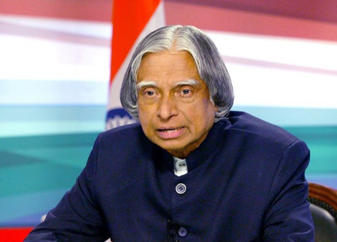
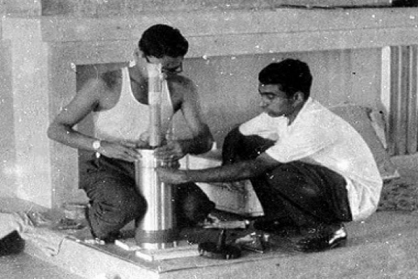

Dr. APJ Abdul Kalam was an Indian aerospace scientist and politician who served as the 11th President of India from 2002 to 2007. He was born and raised in Rameswaram, Tamil Nadu and studied physics and aerospace engineering. He spent four decades as a scientist and science administrator, mainly at the Defence Research and Development Organisation (DRDO) and Indian Space Research Organisation (ISRO) and was intimately involved in India’s civilian space programme and military missile development efforts. 
He was also known as the Missile Man of India for his work on the development of ballistic missile and launch vehicle technology. He also played a pivotal organisational, technical, and political role in India’s Pokhran-II nuclear tests in 1998. It was the first since the original nuclear test by India in 1974. Dr.Kalam was unanimously elected as the 11th president of India in 2002. 
Dr. Kalam was popularly known as people’s president. An eminent educationist and dedicated his life in public service. He was fond of children and he worked closely for the reform of the education system in India. He was a recipient of several prestigious awards, including the Bharat Ratna, India’s highest civilian honour. On 27 July 2015 at the age of 83 Dr. Kalam left us all due to sudden cardiac arrest while delivering a lecture at the Indian Institute of Management Shillong. The funeral ceremony was held in his hometown of Rameswaram where he was buried with teary eyes and full state honours.